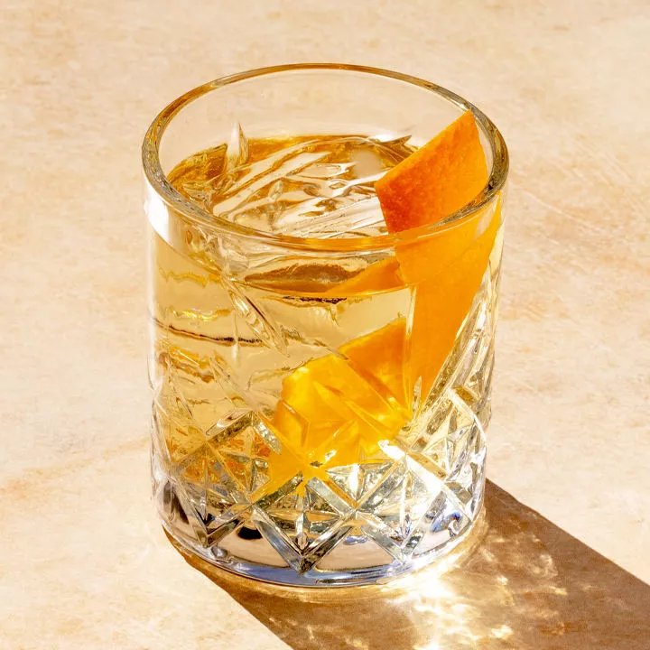

Oaxacan Old Fashioned

A Oaxacan Old Fashioned is a Mexican twist on an old favorite. Tequila comes in three forms, blanco, reposado, and anejo. Blanco is the clear tequila most people think of when you say tequila! Reposado means "rested", which is tequila blanco that has been rested in an oak barrel for 2 moths to no more than a year. Anejo, means aged, tequila that has been aged in oak barrels for 1-3 years!
.
Ingredients
- 1.5 oz reposado tequila
- 1/2 mezcal
- 1 barspoon agave nectar
- 2 dashes Angostura bitters
- Garnish: orange peel
- Add the tequila, mexal, agave nectar, and Angostura bitters to an Old Fashioned glass with one large ice cube, and stir until well chilled.
- Flame an orange peel over the top of the drink to express its oils, then garnish with peel.
- Enjoy responsibly.
Return to Main page